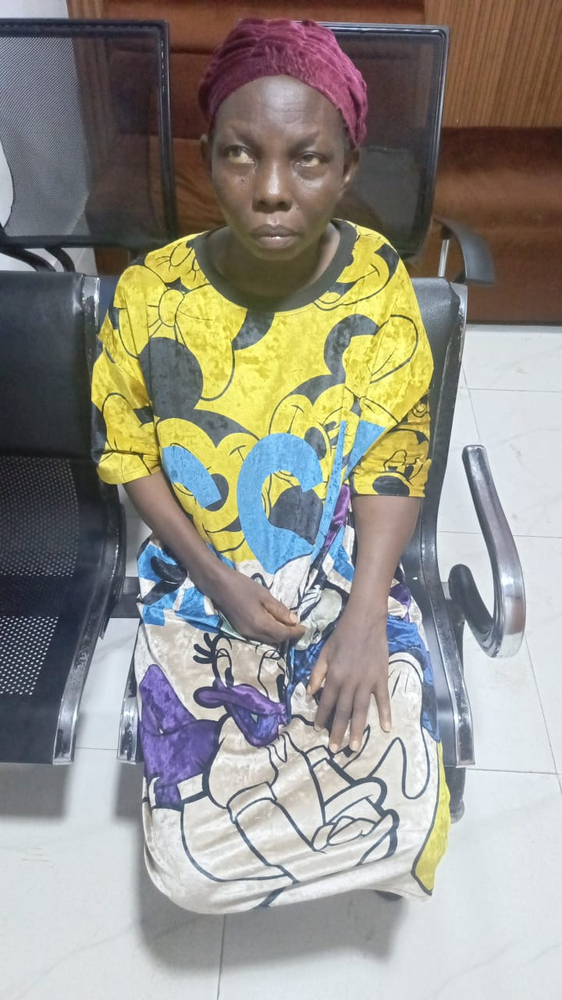

UrgentLoretta
Manchester
Stage 3 breast cancer
Loretta has been diagnosed with Stage 3 breast cancer and her doctors have prescribed an urgent course of chemotherapy and radiotherapy. She needs £900 to cover the full cost of her treatment. Without this support, Loretta cannot begin the treatment that her doctors say gives her the best chance of recovery. She is reaching out to our community for help — every pound brings her closer to starting.
What’s needed
- Chemotherapy treatment costs
- Radiotherapy treatment costs
- Travel to and from hospital appointments
- Nutrition support during treatment
£0 raised
of £900 needed